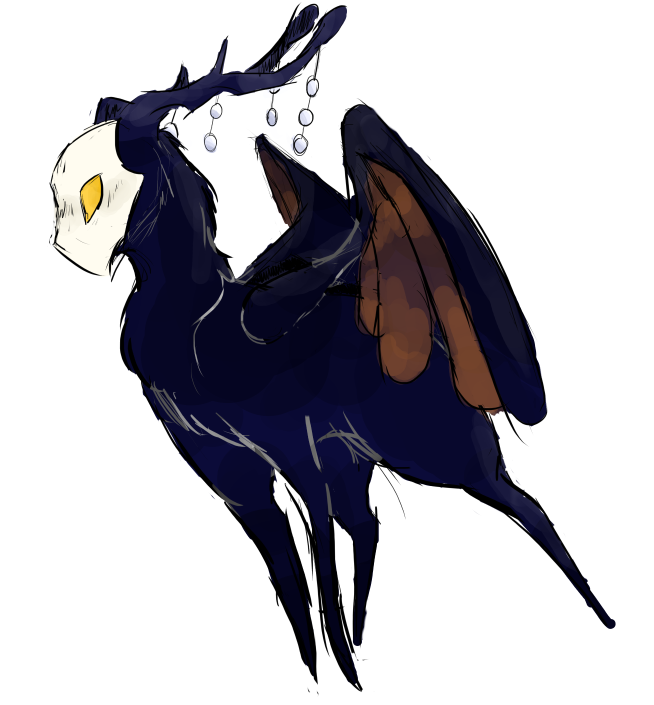

Emissary


text
Emissary was originally created to be a more effective messenger, carrying the wings of a Vulture, and the long legs of a Rain Deer.
This however, did not work out as planned. Who knew that combining a hostile carnivore with a chill herbivore might be a bad idea. While yes, it proved to be amazing at its job, it would occasionally eat those it delivered to.
im thinking like the people creating it pulled a "okay this is an issue we should probably stop using it to send things."
could be connected to the slugcats and scavengers by helping the two trade amongst themselves, or between one another.
It still has a bad habit of eating the people it receives things from, or delivers to, but its trying to work on it.
It can communicate with slugcats and scavengers, but not well. Preferring to use movements and short sentences or singular words.
It genuinely likes its friends. Much to its dismay, its friends look mighty tasty.
Emissary was featured in Round 3, where they were a Veteran. Though they never killed anyone, they were a help to the town nonetheless, having helped find the Medusa.